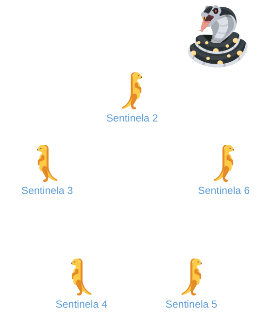

using Distributed, DistributedArrays
addprocs(3)
@everywhere using DistributedArrays
@everywhere using DistributedArrays.SPMD
@everywhere function spmd_teste_bcast()
if myid() == 2
# matriz com dados da cobra
A = [i*(1.0 + im*2.0) for i = 1:3]
else
# Não se esqueça de definir a variável `A`, mesmo que
# você não a usa antes do `bcast` os nenhum processos
A = nothing
end
print("Antes bcast, '$(myid())' tem A = $A\n")
## Processo `2` envia 'A' para toda a rede
## A rede recebe 'novoA'
novoA = bcast(A, 2)
# É necessário parar e esperar que todos
# os processos tenham o mesmo dado
barrier(;pids=[2,3,4])
print("Depois bcast, '$(myid())' tem A = $novoA\n")
nothing
end
spmd(spmd_teste_bcast; pids=workers())18 Primeiro Teste
a## SPMD
Daisy está rapidamente subindo ao topo, literalmente. Após seu sucesso com o projeto de túnel de profundidade, seu chefe falou muito bem de suas habilidades com seus superiores, e Daisy foi promovida ao dever de Sentinela Real da gangue. Em seu novo cargo, ela é responsável por manter a guarda e procurar possíveis ameaças ou perigos. Depois que uma ameaça é encontrada, todos os suricates em serviço são notificados e, se possível, eles oferecer assistência.
Daisy imediatamente começou a imaginar possíveis algoritmos para melhorar seu novo emprego. Ela sabia que a comunicação seria ainda mais complexa do que antes. Buscando ajuda de Martin, ele disse para Daisy escrever um código semelhante ao que ela usou com programação de placas de vídeo, no qual todos os processos recebem o mesmo código, executariam ao mesmo tempo, mas tem resultados diferentes. Essa abordagem é conhecida como Single Program Multiple Data ou SPMD.
Daisy recordou desse nome na documentação do pacote DistributedArrays.jl. Esse pacote oferecia uma interface para esse recurso, mas Daisy nunca havia prestado a devida atenção a ele antes.
Ela começou seus testes, começando com uma simulação. Ela iria supor que uma cobra foi avistada por uma Sentinela Real, e então precisaria notificar todos as outras Sentinelas, compartilhando informações sobre a posição da cobra em uma matriz.
Sintaxe:
bcast
Em SPMD, esse conceito de transmitir a todos os processos algum valor, é conhecido como broadcast, e no pacote DistributedArrays.jl, é necessário usar o comando bcast.
18.1 Segundo Teste
Daisy consegue comunicar a todos a respeito da ameaça, mas como que ela vai saber quem irá ajudar a combate-lá? Para isso, ela precisou dos comandos sendto e recvfrom - ‘enviar para’ e ‘receber de’ em uma tradução livre. Seu novo código é uma modificação do anterior, para ter certeza que todos os Sentinelas conseguem enviar mensagens.
@everywhere function spmd_teste_send_recv()
# primeiro encontra a cobra
if myid() == 2
println("$(myid()) achou a cobra")
cobra = 2
else
cobra = nothing
end
# notifica todos os sentinelas
aonde_esta_cobra = bcast(cobra, 2)
barrier(;pids=[2,3,4])
# dependendo do nome, a sentinela toma
# uma ação diferente
if myid() ≠ 2
# outras sentinelas dizem que escutaram
mensagem = "$(myid()) entendeu o recado"
sendto(aonde_esta_cobra, mensagem)
elseif myid() == 2
# sentinela 2 fica esperando todas
# falaram que entenderam
outras_sentinelas = [3,4]
for sentinela = outras_sentinelas
mensagem = recvfrom(sentinela)
println(mensagem)
end
end
barrier(;pids=[2,3,4])
nothing
end
spmd(spmd_teste_send_recv; pids=workers())
rmprocs();18.2 Último Teste
Agora Daisy tem condições de fazer um código realistico.
Quando uma cobra é avistada, todos os sentinelas são notificados. Todos os suriciates deveriam ir até a serpente para formar um pequeno exército. Contudo, alguns suricates têm medo, e permanecem em suas posições.
Se a maioria comparecer ao local, o exército consegue fazer gritos o suficiente para espantar o inimigo. Do contrário, a cobra terá um suricate no seu cardápio.

O código final de Daisy levou tudo isso em conta, cada sentinela tem 50% de chance de enfrentar a cobra - do mesmo jeito que seus pais lhe faziam ficar em casa.
using Distributed
addprocs(5)
@everywhere using DistributedArrays
@everywhere using DistributedArrays.SPMD
@everywhere function spmd_snake_drill()
sentinela = myid()
if sentinela == 2
cobra = 2
println("Sentinela '$(sentinela)' avistou uma cobra.")
else
cobra = nothing
end
# notificar todos os sentinelas
aonde_esta_cobra = bcast(cobra, 2)
barrier(;pids=[2,3,4,5,6])
if sentinela ≠ 2
exercito = nothing
println("Sentinela '$(sentinela)' escutou o recado...")
if rand() > 0.5
println(" e '$(sentinela)' pode ajudar.")
podeAjudar = true
sendto(aonde_esta_cobra, podeAjudar)
else
println(" e '$(sentinela)' não pode ajudar.")
podeAjudar = false
sendto(aonde_esta_cobra, podeAjudar )
end
elseif sentinela == 2
# todos os membros do exército
exercito = [2] # o sentinela 2 vai participar
outras_sentinelas = [3,4,5,6]
for sentinela = outras_sentinelas
podeAjudar = recvfrom(sentinela)
if podeAjudar
push!(exercito, sentinela)
println("'$(sentinela)' chegou para ajudar.")
end
end
println("O exército $(exercito) irá lutar!")
println("-------")
end
barrier(;pids=[2,3,4,5,6])
if sentinela == 2
qtd_suricates = 5
## Se a maioria dos suricates estiver
## no exército, eles ganham
if length(exercito) > qtd_suricates÷2
println("--> Exército venceu.")
println("A cobra foi derrotada.")
else
println("--> O exército perdeu.")
println("A cobra teve sua refeição.")
end
end
nothing
end
spmd(spmd_snake_drill; pids=workers())
rmprocs();